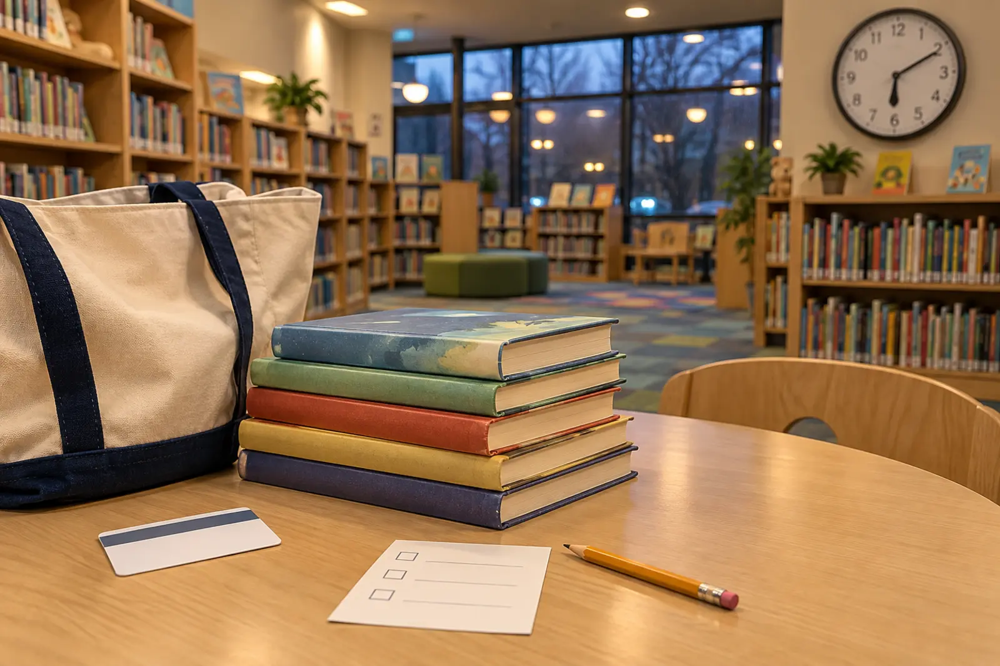

Hold pickup
Best for: the lowest-friction school night. Confirm the items are ready, collect them, then give each child one free-choice browse.
RAINY DAY · SCHOOL NIGHT · LOW-COST
The library does not need to become a three-hour cultural achievement. Give the visit one job, protect ten minutes for free browsing and leave before checkout becomes the hardest part of the night.

Onondaga County Public Libraries lists 32 member locations: Central Library, city branches and independent suburban libraries. Hours, accessibility, events, room layouts, borrowing rules and services vary by location. That variety is useful only if the family checks the exact branch page before leaving. A countywide system is not one building with one schedule.
This guide is for an ordinary visit, not a dated program. If a storytime, club or craft is the reason for going, use the official calendar and registration instructions instead. The separate current weekend guide remains the place for time-specific family events.
Public-library access can be low-cost, but do not promise that every item, replacement, special service or nonresident card is free. Current borrowing responsibility and account rules control. Bring the existing card and return materials if the mission needs them.
Park and unload with the family parking-lot plan. Inside, identify the children's area, checkout point and restroom without touring the whole building. Children carry nothing until the family knows where it will finish.
Pick up holds, find the series or ask the question. If a book is unavailable, use the catalog or ask staff about a hold instead of converting the night into a shelf-by-shelf search. Adults should not pretend to know every classification or branch practice. A two-minute question at the desk can save twenty minutes of wandering.
Each child chooses a defined number or a defined tote-space—not “whatever you want.” For school-age kids, a practical split is one confident choice, one stretch choice and one odd choice that simply looks interesting. Graphic novels, audiobooks and nonfiction count; the mission is not a reading-level performance review.
Read the first page, scan the table of contents or listen to a sample when the branch and format allow it. Put obvious misses back in the correct return area rather than reshelving them randomly. If the building is busy, keep the family footprint small and follow staff direction.
One adult checks account messages and due dates. One child counts the books into the same tote. Take a receipt or save the account record, then leave. Do not restart browsing while another family member waits at checkout.
A bag is a physical budget. Choose one that the adult can carry without strain and that fits the normal return routine. The limit prevents twenty-five exciting books from becoming an overdue pile. If children need separate responsibility, divide the same total into named sections rather than adding unlimited bags.
At home, the tote lives in one visible return spot. Books do not migrate to the car, under beds and into school backpacks without a deliberate handoff. Pair that with the one-home-for-important-things rule; the same logic works outside a hotel.
For ages 6–8, keep the mission visual and let the adult manage account steps. For ages 9–12, let the child search the catalog or ask staff one prepared question while the adult stays available. A library is shared public space, not a silence test. Follow the posted behavior policy, keep voices and movement appropriate to the room, and leave if the family cannot use the space safely tonight.
Do not use another patron, a librarian or an older sibling as unscheduled child supervision. If a child has sensory, communication or mobility needs, contact the branch about the actual environment and choose a shorter proof visit.
Branch closed: do the home shelf reset—return books to one spot, sample one unread book and place one future hold through the official account only if the family understands it. Everyone fried: pickup and return only; skip browsing. No card ready: visit to read in the building and ask staff what is required for future borrowing. No desired book: record the title and leave; scarcity is not a command to buy it tonight.
For a longer indoor destination, use the MOST three-zone plan. For any museum-like building day, the pick-three system protects attention better than trying to consume every room.
Skip or shorten the visit when the exact branch is closed, illness makes shared indoor space inappropriate, transportation or parking will consume the entire window, the family's account issue needs an adult-only conversation, or a child needs a different environment after the school day. The at-home backup still counts as a useful evening.
MAKE THE DAY COUNT
Build the plan your family can finish well, then leave enough energy for the next part of the day.
More family plans